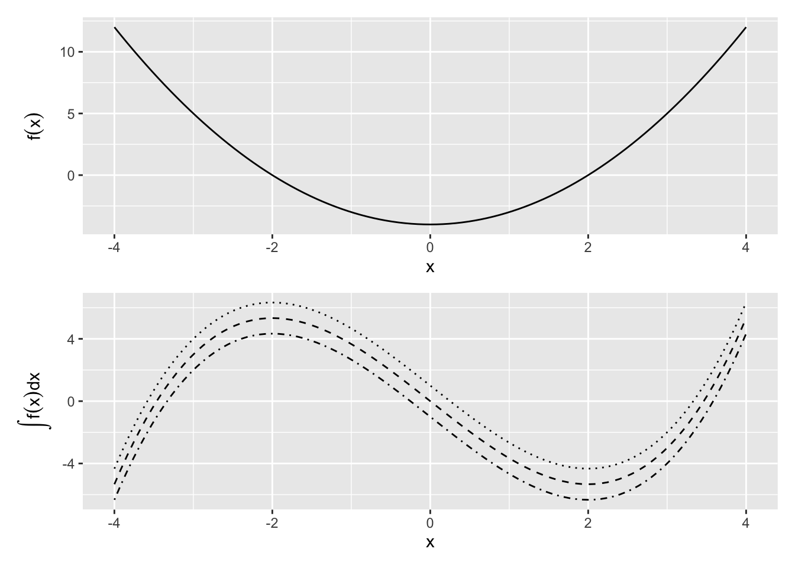
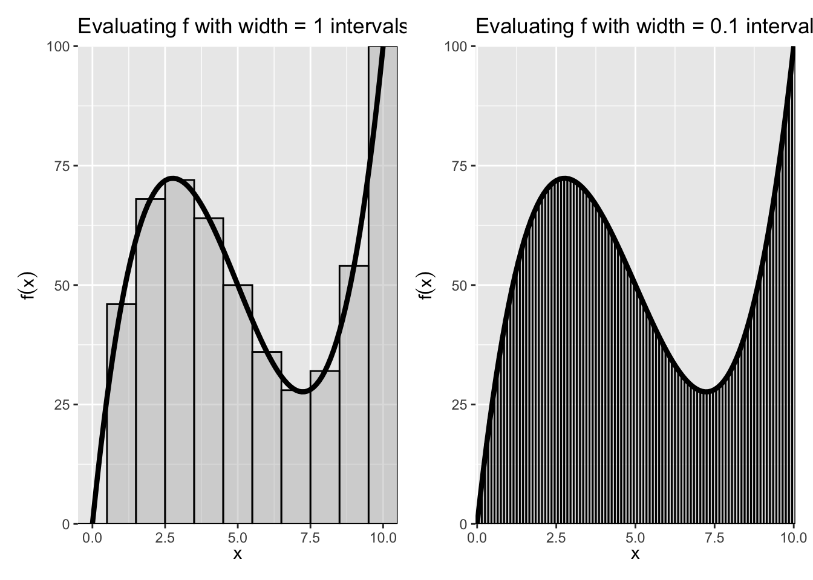

12 Integral Calculus
12.1 The Indefinite Integral
So far, we’ve been interested in finding the derivative f=F' of a function F. However, sometimes we’re interested in exactly the reverse: finding the function F for which f is its derivative. We refer to F as the antiderivative of f.
Definition 12.1 (Antiderivative) The antiverivative of a function f(x) is a differentiable function F whose derivative is f.
F^\prime = f.
Another way to describe is through the inverse formula. Let DF be the derivative of F. And let DF(x) be the derivative of F evaluated at x. Then the antiderivative is denoted by D^{-1} (i.e., the inverse derivative). If DF=f, then F=D^{-1}f.
This definition bolsters the main takeaway about integrals and derivatives: They are inverses of each other.
Exercise 12.1 (Antiderivative) Find the antiderivative of the following:
- f(x) = \frac{1}{x^2}
- f(x) = 3e^{3x}
We know from derivatives how to manipulate F to get f. But how do you express the procedure to manipulate f to get F? For that, we need a new symbol, which we will call indefinite integration.
Definition 12.2 (Indefinite Integral) The indefinite integral of f(x) is written
\int f(x) dx
and is equal to the antiderivative of f.
Example 12.1 Draw the function f(x) and its indefinite integral, \int\limits f(x) dx
f(x) = (x^2-4)
Solution. The Indefinite Integral of the function f(x) = (x^2-4) can, for example, be F(x) = \frac{1}{3}x^3 - 4x. But it can also be F(x) = \frac{1}{3}x^3 - 4x + 1, because the constant 1 disappears when taking the derivative.
Some of these functions are plotted in the bottom panel of Figure 12.1 as dotted lines.
Notice from these examples that while there is only a single derivative for any function, there are multiple antiderivatives: one for any arbitrary constant c. c just shifts the curve up or down on the y-axis. If more information is present about the antiderivative — e.g., that it passes through a particular point — then we can solve for a specific value of c.
Properties of Integration
Some useful properties of integrals follow by virtue of being the inverse of a derivative.
12.1.1 Properties of Integration
- Constants are allowed to slip out: \int a f(x)dx = a\int f(x)dx
- Integration of the sum is sum of integrations: \int [f(x)+g(x)]dx=\int f(x)dx + \int g(x)dx
- Reverse Power-rule: \int x^n dx = \frac{1}{n+1} x^{n+1} + c
- Exponents are still exponents: \int e^x dx = e^x +c
- Recall the derivative of \ln(x) is one over x, and so: \int \frac{1}{x} dx = \ln x + c
- Reverse chain-rule: \int e^{f(x)}f^\prime(x)dx = e^{f(x)}+c
- More generally: \int [f(x)]^n f'(x)dx = \frac{1}{n+1}[f(x)]^{n+1}+c
- Remember the derivative of a log of a function: \int \frac{f^\prime(x)}{f(x)}dx=\ln f(x) + c
Example 12.2 (Common Integration) Simplify the following indefinite integrals:
- \int 3x^2 dx
- \int (2x+1)dx
- \int e^x e^{e^x} dx
12.2 The Definite Integral
If there is a indefinite integral, there must be a definite integral. Indeed there is, but the notion of definite integrals comes from a different objective: finding the are a under a function. We will find, perhaps remarkably, that the formula we find to get the sum turns out to be expressible by the anti-derivative.
Suppose we want to determine the area A(R) of a region R defined by a curve f(x) and some interval a\le x \le b.

One way to calculate the area would be to divide the interval a\le x\le b into n subintervals of length \Delta x and then approximate the region with a series of rectangles, where the base of each rectangle is \Delta x and the height is f(x) at the midpoint of that interval. A(R) would then be approximated by the area of the union of the rectangles, which is given by S(f,\Delta x)=\sum\limits_{i=1}^n f(x_i)\Delta x and is called a Riemann sum.
As we decrease the size of the subintervals \Delta x, making the rectangles “thinner,” we would expect our approximation of the area of the region to become closer to the true area. This allows us to express the area as a limit of a series:
A(R)=\lim\limits_{\Delta x\to 0}\sum\limits_{i=1}^n f(x_i)\Delta x
Figure 12.2 shows that illustration. The curve depicted is f(x) = -15(x - 5) + (x - 5)^3 + 50. We want approximate the area under the curve between the x values of 0 and 10. We can do this in blocks of arbitrary width, where the sum of rectangles (the area of which is width times f(x) evaluated at the midpoint of the bar) shows the Riemann Sum. As the width of the bars \Delta x becomes smaller, the better the estimate of A(R).
This is how we define the “Definite” Integral:
Definition 12.3 (The Definite Integral (Riemann)) If for a given function f the Riemann sum approaches a limit as \Delta x \to 0, then that limit is called the Riemann integral of f from a to b. We express this with the \int, symbol, and write \int\limits_a^b f(x) dx= \lim\limits_{\Delta x\to 0} \sum\limits_{i=1}^n f(x_i)\Delta x
The most straightforward of a definite integral is the definite integral. That is, we read
\int\limits_a^b f(x) dx as the definite integral of f from a to b and we defined as the area under the “curve” f(x) from point x=a to x=b.
The fundamental theorem of calculus shows us that this sum is, in fact, the antiderivative.
Theorem 12.1 (First Fundamental Theorem of Calculus) Let the function f be bounded on [a,b] and continuous on (a,b). Then, suggestively, use the symbol F(x) to denote the definite integral from a to x
F(x)=\int\limits_a^x f(t)dt, \quad a\le x\le b
Then F(x) has a derivative at each point in (a,b) and F^\prime(x)=f(x), \quad a<x<b That is, the definite integral function of f is the one of the antiderivatives of some f.
This is again a long way of saying that that differentiation is the inverse of integration. But now, we’ve covered definite integrals.
The second theorem gives us a simple way of computing a definite integral as a function of indefinite integrals.
12.2.1 Second Fundamental Theorem of Calculus
Let the function f be bounded on [a,b] and continuous on (a,b). Let F be any function that is continuous on [a,b] such that F^\prime(x)=f(x) on (a,b). Then \int\limits_a^bf(x)dx = F(b)-F(a)
So the procedure to calculate a simple definite integral \int\limits_a^b f(x)dx is then
- Find the indefinite integral F(x).
- Evaluate F(b)-F(a).
Example 12.3 (Definite Integral of a monomial) Solve \int\limits_1^3 3x^2 dx. Let f(x) = 3x^2.
Exercise 12.2 What is the value of \int\limits_{-2}^2 e^x e^{e^x} dx?
Properties for Definite Integrals
The area-interpretation of the definite integral provides some useful properties for definite integrals
- There is no area below a point: \int\limits_a^a f(x)dx=0
- Reversing the limits changes the sign of the integral: \int\limits_a^b f(x)dx=-\int\limits_b^a f(x)dx
- Sums can be separated into their own integrals: \int\limits_a^b [\alpha f(x)+\beta g(x)]dx = \alpha \int\limits_a^b f(x)dx + \beta \int\limits_a^b g(x)dx
- Areas can be combined as long as limits are linked: \int\limits_a^b f(x) dx +\int\limits_b^c f(x)dx = \int\limits_a^c f(x)dx
Exercise 12.3 Simplify the following definite intergrals.
- \int\limits_1^1 3x^2 dx =
- \int\limits_0^4 (2x+1)dx=
- \int\limits_{-2}^0 e^x e^{e^x} dx + \int\limits_0^2 e^x e^{e^x} dx =
12.3 Integration by Substitution
From the second fundamental theorem of calculus, we now that a quick way to get a definite integral is to first find the indefinite integral, and then just plug in the bounds.
Sometimes the integrand (the thing that we are trying to take an integral of) doesn’t appear integrable using common rules and antiderivatives. A method one might try is integration by substitution, which is related to the Chain Rule.
Suppose we want to find the indefinite integral \int g(x)dx but g(x) is complex and none of the formulas we have seen so far seem to apply immediately. The trick is to come up with a new function u(x) such that g(x)=f[u(x)]u'(x).
Why does an introduction of yet another function end of simplifying things? Let’s refer to the antiderivative of f as F. Then the chain rule tells us that \frac{d}{dx} F[u(x)]=f[u(x)]u'(x). So, F[u(x)] is the antiderivative of g. We can then write \int g(x) dx= \int f[u(x)]u'(x)dx = \int \frac{d}{dx} F[u(x)]dx = F[u(x)]+c
To summarize, the procedure to determine the indefinite integral \int g(x)dx by the method of substitution:
- Identify some part of g(x) that might be simplified by substituting in a single variable u (which will then be a function of x).
- Determine if g(x)dx can be reformulated in terms of u and du.
- Solve the indefinite integral.
- Substitute back in for x
Substitution can also be used to calculate a definite integral. Using the same procedure as above, \int\limits_a^b g(x)dx=\int\limits_c^d f(u)du = F(d)-F(c) where c=u(a) and d=u(b).
Example 12.4 (Integration by Substitution I) Solve the indefinite integral \int x^2 \sqrt{x+1}dx.
For the above problem, we could have also used the substitution u=\sqrt{x+1}. Then x=u^2-1 and dx=2u du. Substituting these in, we get \int x^2\sqrt{x+1}dx=\int (u^2-1)^2 u 2u du which when expanded is again a polynomial and gives the same result as above.
Another case in which integration by substitution is is useful is with a fraction.
Example 12.5 (Integration by Substitutiton II) Simplify \int\limits_0^1 \frac{5e^{2x}}{(1+e^{2x})^{1/3}}dx.
12.4 Integration by Parts
Another useful integration technique is integration by parts, which is related to the Product Rule of differentiation. The product rule states that \frac{d}{dx}(uv)=u\frac{dv}{dx}+v\frac{du}{dx} Integrating this and rearranging, we get \int u\frac{dv}{dx}dx= u v - \int v \frac{du}{dx}dx or \int u(x) v'(x)dx=u(x)v(x) - \int v(x)u'(x)dx
More easily remembered with the mnemonic “Ultraviolet Voodoo”: \int u dv = u v - \int v du where du=u'(x)dx and dv=v'(x)dx.
For definite integrals, this is simply
\int\limits_a^b u\frac{dv}{dx}dx = \left. u v \right|_a^b - \int\limits_a^b v \frac{du}{dx}dx
Our goal here is to find expressions for u and dv that, when substituted into the above equation, yield an expression that’s more easily evaluated.
Example 12.6 (Integration by Parts I) Simplify the following integrals. These seemingly obscure forms of integrals come up often when integrating distributions.
\int x e^{ax} dx
Solution. Let u=x and \frac{dv}{dx} = e^{ax}. Then du=dx and v=(1/a)e^{ax}. Substituting this into the integration by parts formula, we obtain
\begin{align*}
\int x e^{ax} dx &= u v - \int v du\nonumber\\
&=x\left( \frac{1}{a}e^{ax}\right) -\int\frac{1}{a}e^{ax}dx\nonumber\\
&=\frac{1}{a}xe^{ax}-\frac{1}{a^2}e^{ax}+c\nonumber
\end{align*}
- Exercise 12.4 (Integration by Parts II)
- Integrate
\int x^n e^{ax} dx
- Integrate
\int x^3 e^{-x^2} dx
Answers to Examples and Exercises
Solution.
- f^\prime(x)= 0
- f^\prime(x)= 1
- f^\prime(x)= 2x^3
- f\prime(x)= 3x^2
- f\prime(x)= -2x^{-3}
- f\prime(x)= 14x^6
- f\prime(x) = 4x^3 - 3x^2 + 2x -1
- f\prime(x) = 5x^4 + 3x^2 - 2x
- f\prime(x) = 6x + \frac{2}{3}x^{\frac{-2}{3}}
- f\prime(x)= \frac{-4x}{x^4 - 2x^2 + 1}
Solution. For convenience, define f(z) = z^6 and z = g(x) = 3x^2+5x-7. Then, y=f[g(x)] and
\begin{align*} \frac{d}{dx}y&= f^\prime(z) g^\prime(x) \\ &= 6(3x^2+5x-7)^5 (6x + 5) \end{align*}
Solution.
- Let u(x)=-3x. Then u^\prime(x)=-3 and f^\prime(x)=-3e^{-3x}.
- Let u(x)=x^2. Then u^\prime(x)=2x and f^\prime(x)=2xe^{x^2}.
Solution.
- Let u(x)=x^2+9. Then u^\prime(x)=2x and \frac{dy}{dx}= \frac{u^\prime(x)}{u(x)} = \frac{2x}{(x^2+9)}
- Let u(x)=\ln x. Then u^\prime(x)=1/x and \frac{dy}{dx} = \frac{1}{(x\ln x)}.
- Use the generalized power rule. \frac{dy}{dx} = \frac{(2 \ln x)}{x}
- We know that \ln e^x=x and that dx/dx=1, but we can double check. Let u(x)=e^x. Then u^\prime(x)=e^x and \frac{dy}{dx} = \frac{u^\prime(x)}{u(x)} = \frac{e^x}{e^x} = 1.
Solution. What is F(x)? From the power rule, recognize \frac{d}{dx}x^3 = 3x^2 so
\begin{align*} F(x) &= x^3\\ \int\limits_1^3 f(x) dx &= F(x = 3) - F(x - 1)\\ &= 3^3 - 1^3\\ &=26 \end{align*}
Solution. The problem here is the \sqrt{x+1} term. However, if the integrand had \sqrt{x} times some polynomial, then we’d be in business. Let’s try u=x+1. Then x=u-1 and dx=du. Substituting these into the above equation, we get
\begin{align*} \int x^2\sqrt{x+1}dx&= \int (u-1)^2\sqrt{u}du\\ &= \int (u^2-2u+1)u^{1/2}du\\ &= \int (u^{5/2}-2u^{3/2}+u^{1/2})du \end{align*}
We can easily integrate this, since it is just a polynomial. Doing so and substituting u=x+1 back in, we get \int x^2\sqrt{x+1}dx=2(x+1)^{3/2}\left[\frac{1}{7}(x+1)^2 - \frac{2}{5}(x+1)+\frac{1}{3}\right]+c
Solution. When an expression is raised to a power, it is often helpful to use this expression as the basis for a substitution. So, let u=1+e^{2x}. Then du=2e^{2x}dx and we can set 5e^{2x}dx=5du/2. Additionally, u=2 when x=0 and u=1+e^2 when x=1. Substituting all of this in, we get
\begin{align*} \int\limits_0^1 \frac{5e^{2x}}{(1+e^{2x})^{1/3}}dx &= \frac{5}{2}\int\limits_2^{1+e^2}\frac{du}{u^{1/3}}\\ &= \frac{5}{2}\int\limits_2^{1+e^2} u^{-1/3}du\\ &= \left. \frac{15}{4} u^{2/3} \right|_2^{1+e^2}\\ &= 9.53 \end{align*}
Solution.
- \int x^n e^{ax} dx
As in the first problem, let
u=x^n, dv=e^{ax}dx
Then du=n x^{n-1}dx and v=(1/a)e^{ax}.
Substituting these into the integration by parts formula gives \begin{align*} \int x^n e^{ax} dx &= u v - \int v du\nonumber\\ &=x^n\left( \frac{1}{a}e^{ax}\right) - \int\frac{1}{a}e^{ax} n x^{n-1} dx\nonumber\\ &=\frac{1}{a}x^n e^{ax} - \frac{n}{a}\int x^{n-1}e^{ax}dx\nonumber \end{align*}
Notice that we now have an integral similar to the previous one, but with x^{n-1} instead of x^n.
For a given n, we would repeat the integration by parts procedure until the integrand was directly integratable — e.g., when the integral became \int e^{ax}dx.
- \int x^3 e^{-x^2} dx
We could, as before, choose u=x^3 and dv=e^{-x^2}dx. But we can’t then find v — i.e., integrating e^{-x^2}dx isn’t possible. Instead, notice that \frac{d}{dx}e^{-x^2} = -2xe^{-x^2}, which can be factored out of the original integrand \int x^3 e^{-x^2} dx = \int x^2 (xe^{-x^2})dx.
We can then let u=x^2 and dv=x e^{-x^2}dx. Thedu=2x dx and v=-\frac{1}{2}e^{-x^2}. Substituting these in, we have \begin{align*} \int x^3 e^{-x^2} dx &= u v - \int v du\nonumber\\ &= x^2 \left( -\frac{1}{2}e^{-x^2}\right) -\int \left(-\frac{1}{2}e^{-x^2}\right)2x dx\nonumber\\ &= -\frac{1}{2}x^2 e^{-x^2}+\int x e^{-x^2}dx\nonumber\\ &= -\frac{1}{2}x^2 e^{-x^2}-\frac{1}{2}e^{-x^2}+c\nonumber \end{align*}